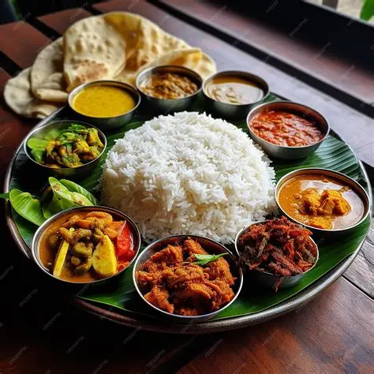
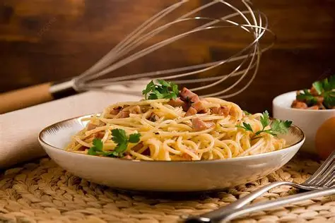
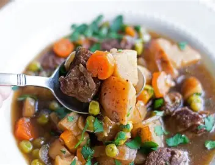
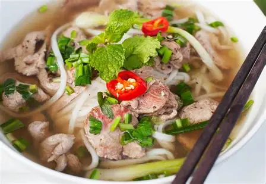
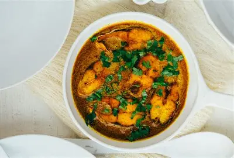
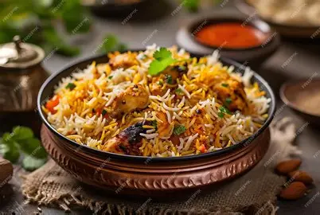
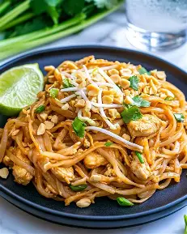
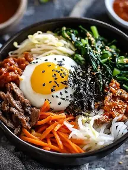

A traditional Sri Lankan meal consisting of rice served with various vegetable, meat, and fish curries.

A classic Italian pasta dish made with eggs, cheese, pancetta, and pepper.
Belgium waffles were originally leavened with yeast,but baking powder is now often used.they are often eaten asa a breackfast food.

Any variety of meat and root vegetable stew native to Ireland.As in all traditional folk dishes,the exact recipe is not consistent from time to time,or place to place.

Rice noodles in beef broth seasoned with cumin,coriander powder,black cerdamom,roasted onion powder,roated ginger powder,fennel and cloves.

Machher Jhol or Machha Jhola is a traditional Bengali and odia spicy fish stew.It is in the from of a very spicy that is served with rice.
A Japanese dish made with seasoned rice and ingredients such as seafood and vegetables.

A fragrant rice dish prepared with rice, spices, vegetables, meat, or seafood.
A Mexican dish made with tortillas and fillings such as vegetables, beans, meat, or cheese.

A popular Thai noodle dish prepared with rice noodles, vegetables, and a savoury sauce.

A Korean rice bowl served with vegetables, toppings, and a flavourful sauce.